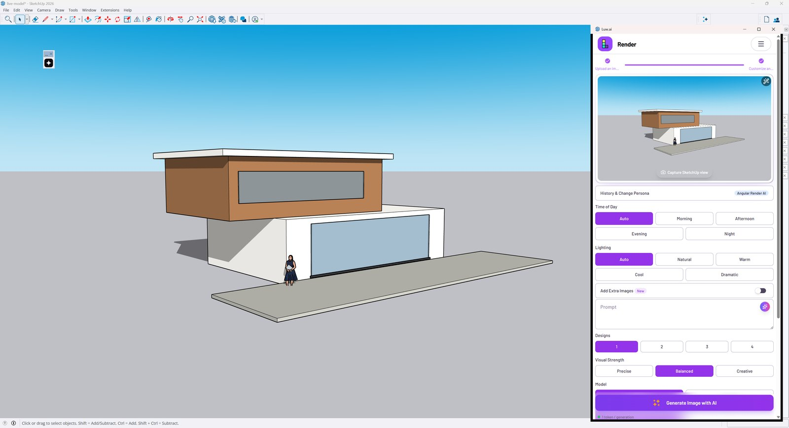
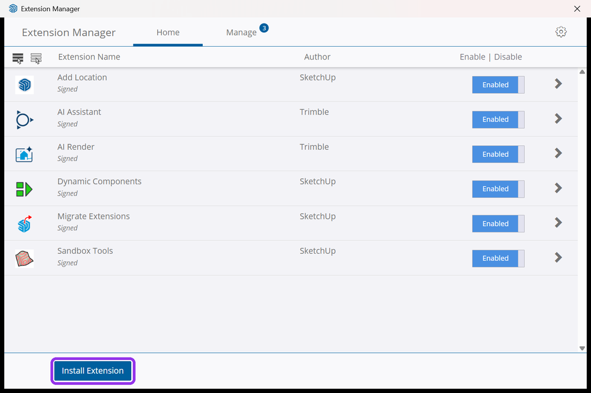
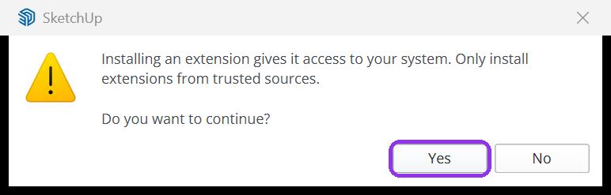
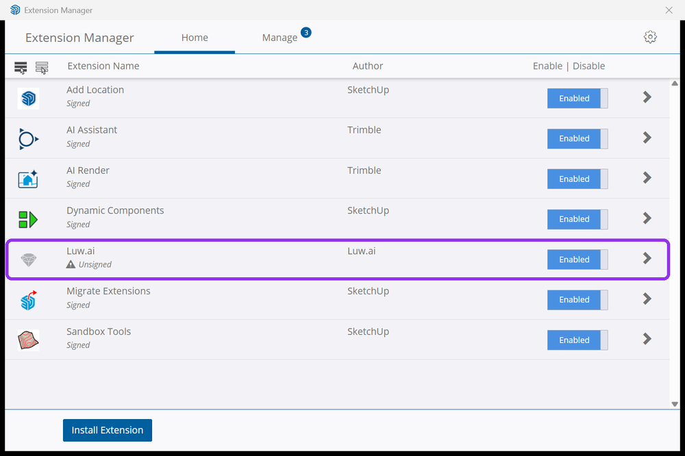
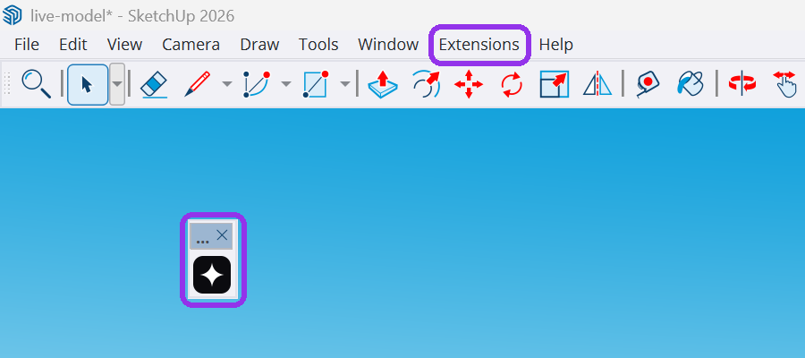
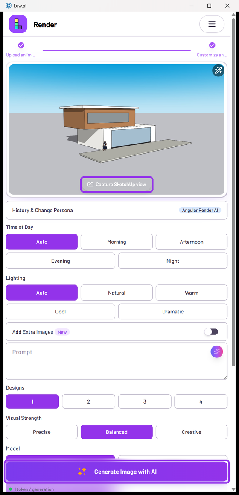
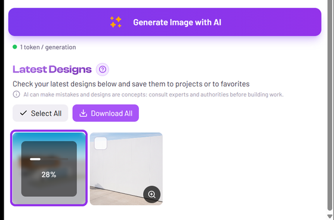
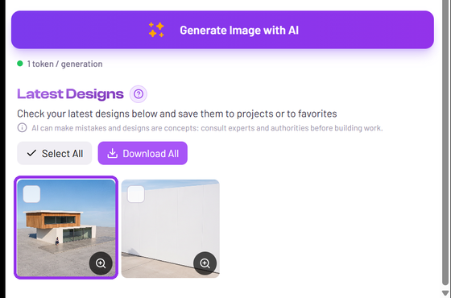
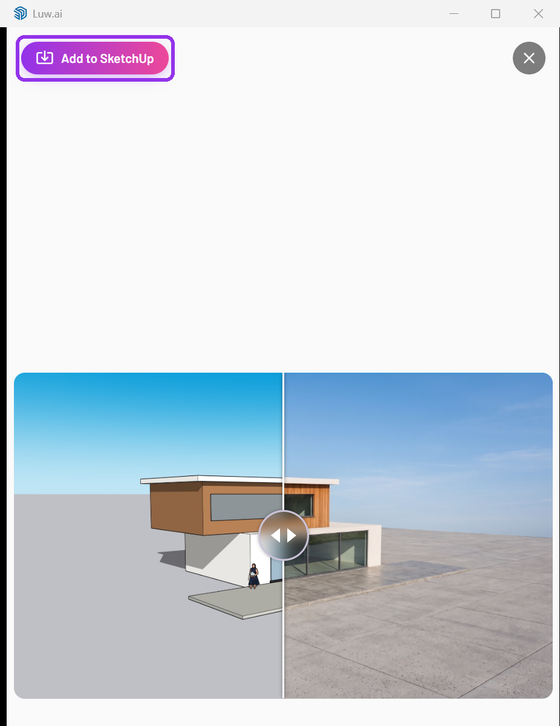
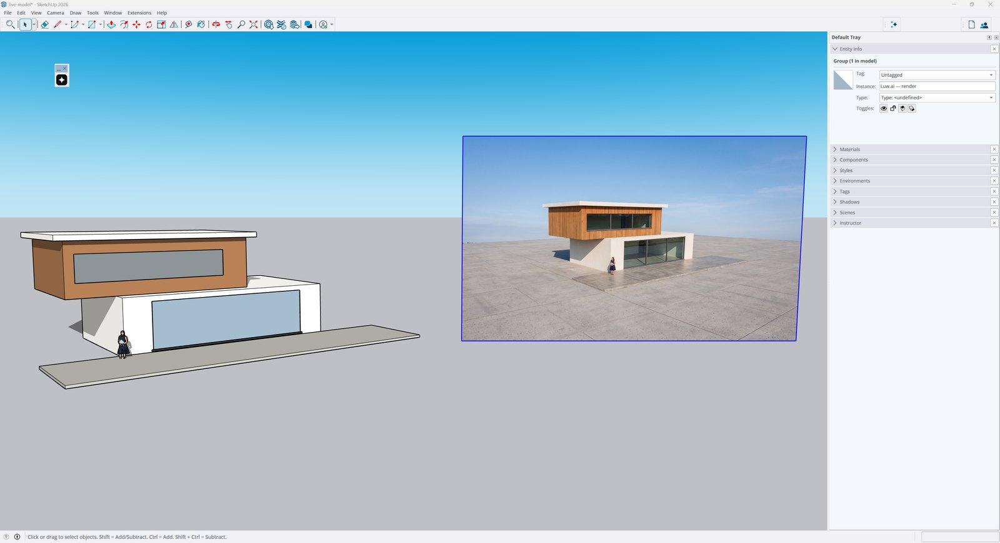

Turn your SketchUp view into a photo-real render, right inside SketchUp. No export, no extra app. This guide shows how to install the extension and make your first render.

SketchUp with the Luw.ai panel. Your view is already in the panel when it opens.
What you need
SketchUp 2021.1 or newer on Windows or Mac. SketchUp Pro, Studio and the free trial all work. The free web version (SketchUp Free) can't run extensions.
A Luw.ai account. Each render uses tokens from your account: 1 token for one image.
An internet connection. The renders are made on Luw.ai's servers.
The Luw.ai extension file:luw_ai-0.1.1.rbz. Download it here and save it anywhere, for example in Downloads. If you got a .zip file instead, unzip it first. The .rbz file is inside.
Install the extension
In SketchUp, open Extensions › Extension Manager.
Click Install Extension at the bottom left.

Choose the file luw_ai-0.1.1.rbz and click Open.
SketchUp asks if you want to continue. Click Yes.

Done. Luw.ai is now in the list and it is Enabled. It says Unsigned for now. That is normal for this version.

Open Luw.ai and sign in
Click the Luw.ai button (a white star on black) on the Luw.ai toolbar. Or use the menu: Extensions › Luw.ai.

The Extensions menu and the Luw.ai toolbar button.
The Luw.ai panel opens next to your model. It is the Luw.ai web app, made to work with SketchUp. You can move it and make it bigger like any window.
First time only: sign in with your Luw.ai account in the panel. SketchUp remembers you, so next time the panel opens ready to use.
Can't see the toolbar? Open View › Toolbars and turn on Luw.ai.
Get your first render
Set up your view. Orbit, pan and zoom in SketchUp until you like the picture. What you see is what Luw.ai renders.
Tip: colors, materials and shadows in your model give better renders than a plain white model.
Open Luw.ai. The Render tool opens, and your SketchUp view is already in it. You don't need to save or export anything.

Moved the camera? Click Capture SketchUp view on the picture to take the new view.
Choose options if you like: Time of Day, Lighting, or a short Prompt such as “summer evening, green garden”. Or leave them on Auto.
Click Generate Image with AI. One image uses 1 token. Your render appears under Latest Designs and is ready in about a minute.

Working on it…

Ready. Click the picture to open it.
Look at your render. Drag the slider in the middle to compare your model with the render. Then click Add to SketchUp at the top left.

That's it. The render is now in your model, next to it. To remove it, press Ctrl+Z (Cmd+Z on Mac) once.

Your model and its render, side by side in SketchUp.
More tools
Open the menu (☰) at the top of the panel for more tools, such as interiors, exteriors, sketch to render and video. Most tools start with your SketchUp view. With 3DGen AI you get a 3D model, and Add to SketchUp brings it into your model as one object.
Help
Luw.ai is not in the Extensions menu.
Open Extensions › Extension Manager and check that Luw.ai is Enabled. If it is not in the list, click the gear icon (top right), set Loading Policy to Approve Unidentified Extensions, and install it again.
The panel is empty or doesn't load.
Luw.ai needs the internet. Check your connection, then close the panel and open it again.
The picture in the panel is an old view.
Click Capture SketchUp view on the picture.
How do I remove the extension?
In Extension Manager, click the arrow next to Luw.ai and choose Uninstall.